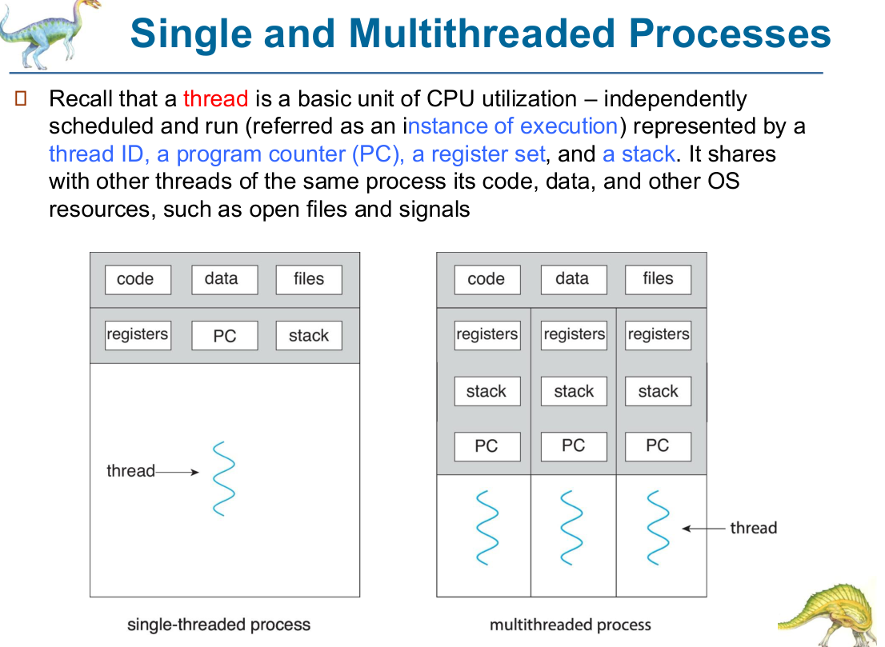
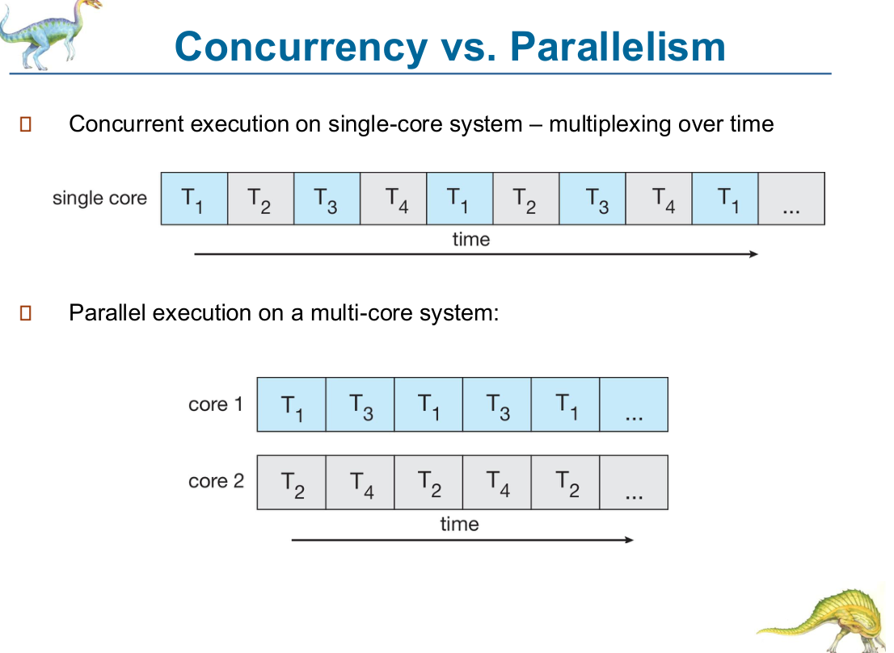

Chapter 4 — Threads & Concurrency（線程與並行）
📌 考試範圍提示：Ch4 通常 3–4 題 MC + 有機會 1 題 short question。必考： thread 有乜自己私有 / 乜同其他 thread 共享、benefits（4 個）、concurrency vs parallelism、data vs task parallelism、Amdahl's Law 計算、multithreading models（many-to-one / one-to-one / many-to-many）、signals（sync vs async）、thread cancellation（asynchronous vs deferred）、fork()/exec() semantics、Linux clone()、heavyweight vs lightweight。
#1. Motivation & Overview（動機）[4.4–4.6]
#1.1 點解要 multithreading？
- 好多 applications 本身係 multithreaded：
- Web browser：一個 thread display images/text，另一個 thread 由 network retrieve data。
- Word processor：display graphics、respond to keystrokes、background spelling & grammar checking。
- Most OS kernels are multithreaded（Linux boot 時建立多個 kernel threads：managing devices、memory management、interrupt handling）。
- Take advantage of processing capabilities on multicore systems（data mining、graphics、AI）。
- ⭐ Process creation is heavy-weight while thread creation is light-weight — threads of the same process share code, data and other resources。
- 其他例子 [4.5]：embedded systems（elevators, planes）、OS kernels、database servers、network servers（file/web server、airline reservation）、parallel programming。
#1.2 Thread 定義 ⭐⭐ [4.6]
- A thread is a basic unit of CPU utilization — independently scheduled and run（an instance of execution）。
- 每個 thread 私有（per-thread）：thread ID, program counter (PC), register set, stack
- 同一 process 嘅 threads 共享（shared）：code (text), data (global variables), heap, open files, signals（及其他 OS resources）
single-threaded process multithreaded process
┌──────┬──────┬──────┐ ┌──────┬──────┬──────┐
│ code │ data │ files│ │ code │ data │ files│ ← shared
├──────┼──────┼──────┤ ├──────┼──────┼──────┤
│ regs │ PC │stack │ │ regs │ regs │ regs │ ← private
└──────┴──────┴──────┘ │stack │stack │stack │ (per thread)
│ PC │ PC │ PC │
└──────┴──────┴──────┘
📝 F19 Q2.3：unique to each thread → program counter, registers, stack, thread ID (thread state)；shared → code, data, files (heap)。 ⚠️ F20 MC11：NOT shared by threads in the same process → Stack。

#2. Benefits（四大好處）⭐⭐ [4.7]
| Benefit | 解釋 |
|---|---|
| Responsiveness | may allow continued execution if part of a process (one thread) is blocked — 對 interactive / UI applications 特別重要 |
| Resource sharing | threads share the resources of a process by default — 比 shared memory / message passing 容易（同一 address space） |
| Economy | thread creation is much cheaper than process creation（less time & memory）；context switching between threads is faster than between processes |
| Scalability | process can take advantage of multicore architectures（threads run in parallel） |
📝 HW2 MC1：app 喺一個 thread blocked 時仍然 respond user → Responsiveness。
#2.1 Heavyweight vs Lightweight（F20 Q2.3）⭐
📝 Model answer：A process is called a heavyweight process because creating it requires allocating a new address space and duplicating the program, data and other resources (PCB, memory, open files) — time- and resource-consuming. A thread is lightweight because it only contains an execution unit (thread ID, PC, registers, stack, TCB) and shares the code, data and open files of its process; creating a thread needs no duplication of program and data, and context switching between threads of the same process is cheaper since the address space stays the same.
#3. Multicore Programming（多核心編程）⭐ [4.8–4.11]
#3.1 五大挑戰 [4.9]
- Dividing tasks — how to divide into separate, concurrent tasks
- Balance — each task performs an "equal" amount of work（value）
- Data splitting — data must be divided to run on separate cores
- Data dependency — if there is a data dependency, synchronization is required
- Testing and debugging — different execution paths make debugging difficult
#3.2 Concurrency vs Parallelism ⭐⭐ [4.9–4.10]
- Parallelism — a system can perform more than one task simultaneously（需要 multicore / multiprocessor）。
- Concurrency — supports more than one task making progress；on a single core, the scheduler provides concurrency by multiplexing over time。
- Single-core：only concurrency is possible；multicore：parallelism possible.
- Concurrency without parallelism 係可以嘅；parallelism 一定 concurrent。

Single core (concurrency): T1 T2 T3 T4 T1 T2 T3 T4 T1 ... (time →)
Two cores (parallelism): core 0: T1 T3 T1 T3 ...
core 1: T2 T4 T2 T4 ...
⚠️ S26 MC16：✅「Concurrency can be supported on a single processor core through time multiplexing by the scheduler」。 ✗「Concurrency means performing more than one task at exactly the same time」（嗰個係 parallelism） ✗「Parallelism means tasks only make progress over time on a single core」 ✗「Testing and debugging become easier in multicore systems」 Sp21 MC：multiple tasks make progress on a single processor → concurrency。
#3.3 Data vs Task Parallelism ⭐ [4.11]
- Data parallelism — distributes subsets of the same data across multiple cores, same operation on each core（e.g. 分開 sum 一個 array 嘅兩半；distributed ML）。
- Task parallelism — distributes threads (tasks) across cores, each thread performing a unique operation。
- Not mutually exclusive — an application may use both（hybrid）。
📝 HW2 MC2：「Threads on different cores perform the same operation on different subsets of an array」→ data parallelism。「One thread handles input, another does spell-check」→ task parallelism。
#4. Amdahl's Law ⭐⭐⭐（計數題必考）[4.12–4.13]
🧮 Amdahl's Law
- S = serial portion， = parallel portion，N = number of processing cores。
- As , speedup → .
- Serial portion has a disproportionate effect on performance gained by adding cores.
- Amdahl's Law identifies theoretical speedup in latency at a fixed workload。
#4.1 例子（全部計算過）
| 題目 | S | N | 計算 | Speedup |
|---|---|---|---|---|
| Slide：75% parallel | 0.25 | 2 | 1.6 | |
| Sp21 MC：30% serial | 0.3 | 7 | 2.5 | |
| HW2 Q3.1(a)：20% serial | 0.2 | 4 | 2.5 | |
| HW2 Q3.1(b) | 0.2 | 5 | ||
| S26 MC17 A：81% parallel | 0.19 | 3 | 2.17 | |
| S26 MC17 B：81% parallel | 0.19 | 5 | 2.84 | |
| S26 MC17 C：61% parallel | 0.39 | 3 | 1.69 ✅（1.6–1.7） | |
| S26 MC17 D：61% parallel | 0.39 | 5 | 1.95 |
#4.2 解題 tips
- 留意題目畀 parallel % 定 serial %（S = serial！）。
- 反向題：要 speedup = X with N cores → 解 S：。
- 例：想 4 cores 有 3× speedup → ≈ 11.1% serial。
- Speedup 上限永遠 同 。
#5. Multithreaded Process & TCB ⭐ [4.14–4.18]
#5.1 Multithreaded process [4.14]
- More than one instance of execution，每個有自己 PC。
- Threads share the same address space → can access the same data.
- Each thread has its own private set of registers.
- Context switch between two threads (T1 → T2) of the same process：save T1's register state, restore T2's；address space remains the same → overhead is much smaller。Switching to a thread of a different process → more overhead.
- Overlap of I/O with other activities within a single program（一個 thread 用 CPU，另一個做 I/O）。
#5.2 Thread Control Block (TCB) ⭐ [4.15]
- Thread = single unique execution context = lightweight process：PC, registers, execution flags, stack。
- Thread 喺 processor 執行 = resident in the registers；PC register holds the address of the executing instruction。
- Each thread has a TCB：
- Execution state：CPU registers, program counter, pointer to stack
- Scheduling info：state, priority, CPU time
- Accounting info
- Various pointers（implementing scheduling queues）
- Pointer to enclosing process (PCB)
- ⚠️ Sp21 MC：NOT in TCB → Process identifier（PID 喺 PCB；TCB 只有 pointer to enclosing process）。
#5.3 Shared vs Private state [4.16] ⭐
- Threads encapsulate concurrency — "active" component；address space encapsulates protection — "passive" part.
- Shared by all threads in a process：contents of memory (global variables, heap)；I/O state (file descriptors, network connections)
- Private to each thread (kept in TCB)：CPU registers (including PC)；execution stack (parameters, temporary variables, saved PC)
- If a process has multiple threads, there is no "process state", only the state of each thread（summary）。
#5.4 Thread lifecycle [4.17–4.18]
- new → ready → running → waiting → terminated（同 process 一樣）。
- "Active" threads are represented by their TCBs; TCBs are organized into queues by state（ready queue、各 device queues：tape unit、disk unit、ethernet…，每個 queue 有自己 scheduling policy）。
📝 HW2 Q2.1：同一 process 兩個 threads 可唔可以有唔同 PC / register 值？→ Yes — 每個 thread 係獨立 flow of execution，有自己 PC、register set、stack；唔 running 時存喺 TCB (Thread Control Block)。
#6. User Threads vs Kernel Threads ⭐⭐ [4.19–4.20]
- User threads — independently executable entities within a program, created and managed by a user-level thread library；visible only to programmers and unknown to the kernel → cannot be scheduled on a CPU directly。
- Kernel threads — supported and managed by the OS；can be scheduled and executed on a CPU（Windows, Linux, macOS, iOS, Android 都支援）。
- ⭐ OS only manages and schedules kernel threads.（F19 Q3.1：OS 排程嘅係 kernel-level threads）
- Three primary thread libraries：POSIX Pthreads、Windows threads、Java threads（對應 POSIX API、Win32 API、Java API）。
- F20 MC12：provides API for creating and managing threads → Thread library (e.g. POSIX Pthreads)。
- If a program defines no user threads, there is no kernel thread to schedule for it（user threads = concurrent & modular entities OS 可利用）。
- TCB 只同 kernel thread 關聯；kernel thread is the only thing the CPU scheduler schedules（summary）。
#7. Multithreading Models ⭐⭐⭐ [4.21–4.26]
| Model | Mapping | 優點 | 缺點 | 例子 |
|---|---|---|---|---|
| Many-to-One | many user threads → 1 kernel thread | thread management 喺 user space（efficient） | one thread blocking (blocking system call) blocks the entire process；cannot run in parallel on multicore（only one kernel thread active at a time） | Solaris Green Threads, GNU Portable Threads（few systems now） |
| One-to-One | each user thread → its own kernel thread | maximum concurrency（another thread runs when one blocks）；parallel on multicore | creating a user thread requires creating a kernel thread → overhead；number of threads per process may be restricted | Windows, Linux（most common now） |
| Many-to-Many | many user threads → smaller or equal number of kernel threads | flexible；OS 可預先建立足夠 kernel threads（thread pool）；user threads 數目唔受 kernel threads 限制 | difficult to implement in practice | Windows ThreadFiber package（otherwise uncommon） |
| Two-level | many-to-many + allows a user thread to be bound to a kernel thread | 更靈活 | 複雜 | — |
- Many-to-one 同 many-to-many 要決定邊個 user thread map 去 kernel thread → process-contention scope (PCS)（Ch5）。
- Concurrency 比較：many-to-one < many-to-many < one-to-one。
- Most OSes now use the one-to-one model（cores 多咗，限制 kernel threads 數目冇咁重要）[4.26]。
- LWP (lightweight process)（summary）：user 同 kernel threads 之間嘅 intermediate data structure；對 thread library 嚟講 LWP 好似一個 virtual processor，library 將 user thread schedule 落 LWP；每個 LWP attached to a kernel thread；kernel thread block → LWP 都 block。
⚠️ MC 陷阱：
- F20 MC13 ✗「A user thread can be mapped to more than one kernel thread」（冇 one-to-many）；✅ kernel threads scheduled by OS；✅ users manage user threads；✅ one user thread → at most one kernel thread。
- Sp21 MC ✗「The many-to-many model is easy to implement in practice」。✅ many-to-one = many user → single kernel；✅ one-to-one more concurrency than many-to-one；✅ most OS now one-to-one。
- HW2 Q2.2：many-to-one 喺 4 cores 可唔可以 parallel？→ No，只有一個 kernel thread，OS 只 schedule kernel threads，一次只可以喺一個 core 上跑（只有 concurrency 冇 parallelism）；一個 thread blocking system call 仲會 block 成個 process。
#8. Threading Issues ⭐⭐ [4.27–4.33]
#8.1 fork() and exec() semantics [4.28]
- Does
fork()called by a thread duplicate only the calling thread or all threads? - Some UNIX systems have two versions of fork().
- If
exec()is called immediately after forking → duplicating only the calling thread is appropriate（exec 會取代成個 process）。 exec()works as normal — replaces the entire process including all threads.
#8.2 Signal Handling ⭐⭐ [4.29–4.31]
- Signals notify a process that a particular event has occurred.
- Synchronous signals — illegal memory access, division by 0 → delivered to the same process that performed the operation causing the signal。
- Asynchronous signals — generated by an event external to the running process：terminating with
kill）。 - 處理：有啲 ignore，有啲（illegal memory access）terminate program。
- Signal handling pattern：(1) generated by an event → (2) delivered to a process → (3) handled by a default or user-defined handler。
- Every signal has a default handler (kernel); a user-defined handler can override the default.
- Multithreaded process 要 deliver 去邊？四個選擇：
- To the thread to which the signal applies
- To every thread in the process
- To certain threads in the process
- Assign a specific thread to receive all signals for the process
- Synchronous signals → delivered to the thread causing the signal（not others）。
- Some asynchronous signals (e.g. terminate process, Ctrl-C) → sent to all threads.
- UNIX：
kill(pid_t pid, int signal)（deliver to a process）；Pthreads：pthread_kill(pthread_t tid, int signal)（deliver to a specific thread）。 - ⚠️ 留意：slide 3.41 將
signal()寫成「send a notification to another process」，但實際 deliver 用kill()（4.31）；signal(SIGINT, handler)係安裝 user-defined handler（PA1）。MC 照題目用字揀。
⚠️ S26 MC18 ✗「All signals should be delivered to all threads in a process」。✅ signals can be received sync or async；✅ users can define custom handlers；✅ different signals can have different handlers。 📝 HW2 MC3：division by zero → synchronous；timer expiration → asynchronous。 📝 HW2 Q2.3 (Ctrl+C)：Asynchronous — Ctrl+C makes the terminal send SIGINT, generated by an event external to the running process. Yes, the program can handle it differently: register a user-defined handler with
signal(SIGINT, handler)(orsigaction), which overrides the default handler (terminate). (SIGKILL/SIGSTOP cannot be caught.) — PA1 myshell 就係用signal(SIGINT, handle_sigint)。
#8.3 Thread Cancellation ⭐ [4.32–4.33]
- Terminating a thread before it has finished；the thread to be cancelled = target thread.
- Asynchronous cancellation — terminates the target thread immediately（可能喺 critical update 中途 → OS 未必可以 reclaim 所有 resources）。
- Deferred cancellation — the target thread periodically checks whether it should terminate, allowing it to terminate itself in an orderly fashion（preferred）。
- Invoking cancellation only requests it; actual cancellation depends on thread state and type.
- Pthreads：if cancellation is disabled, it remains pending until enabled；default type is deferred.
- Code [4.33]：
#include <pthread.h>
pthread_t tid;
pthread_create(&tid, 0, worker, NULL); /* worker = start routine */
pthread_cancel(tid); /* request cancellation */
pthread_join(tid, NULL); /* wait for thread to terminate */
📝 HW2 MC4：deferred cancellation → target thread periodically checks whether it should terminate。
#8.4 Thread-Local Storage（課本補充，Sp21 MC 考過）
- Thread-local storage (TLS) is data that is unique to each thread（類似 static data 但每個 thread 一份；同 local variables 唔同，local 只喺一個 function call 內存在）。
#9. OS Examples [4.34–4.38]
#9.1 Windows Threads
- Windows application = separate process，每個 process 可有多個 threads；Windows uses the one-to-one mapping。
- Thread 組成：thread ID, register set, program counter, separate user and kernel stacks, private data storage area（run-time libraries / DLLs 用）。
- Register set + stacks + private storage area = context of the thread.
- 數據結構：
- ETHREAD (executive thread block) — pointer to process & to KTHREAD（kernel space）
- KTHREAD (kernel thread block) — scheduling & synchronization info, kernel-mode stack, pointer to TEB（kernel space）
- TEB (thread environment block) — thread id, user-mode stack, thread-local storage（user space）
#9.2 Linux Threads ⭐ [4.37–4.38]
- Linux does not differentiate between threads and processes — both are called tasks.
- A thread in Linux is a process that may share certain resources with other threads；每個 thread 有自己
task_struct。 - 對比 Windows：Windows 一個 PCB（shared resources）指向兩個 TCB；Linux 就係兩個 normal task_struct，set up to share resources。
clone()用 flags 指定 share 咩：
clone(CLONE_VM | CLONE_FS | CLONE_FILES | CLONE_SIGHAND, 0);
- CLONE_VM：share address space；CLONE_FS：share file-system info；CLONE_FILES：share open files；CLONE_SIGHAND：share signal handlers。
- Instead of copying all data structures like fork(), the new task points to the parent's data structures depending on the flags.
- A normal
fork()can be implemented asclone(SIGCHLD, 0)（乜都唔 share → 等於 process）。
#10. Pthreads API 速查（Lab 4 / Ch6 都用）
#include <pthread.h>
int pthread_create(pthread_t *tid, const pthread_attr_t *attr, void *(*start)(void *), void *arg);
int pthread_join(pthread_t tid, void **retval); /* wait for thread tid */
void pthread_exit(void *retval);
int pthread_cancel(pthread_t tid);
pthread_t pthread_self(void);
/* mutex */
pthread_mutex_t m; pthread_mutex_init(&m, NULL);
pthread_mutex_lock(&m); /* critical section */ pthread_mutex_unlock(&m);
/* semaphore */
#include <semaphore.h>
sem_t s; sem_init(&s, 0 /*shared between threads*/, 1 /*initial value*/);
sem_wait(&s); /* P / wait: decrement or block */ sem_post(&s); /* V / signal: increment */
- 編譯：
gcc prog.c -lpthread（或-pthread）。 - 典型 pattern：
void *worker(void *arg) { int id = *(int *)arg; ...; return NULL; }
int main() {
pthread_t t[4]; int ids[4];
for (int i = 0; i < 4; i++) { ids[i] = i; pthread_create(&t[i], NULL, worker, &ids[i]); }
for (int i = 0; i < 4; i++) pthread_join(t[i], NULL);
}
- ⚠️ 傳
&i（loop variable）畀多個 thread 會 race（i 會變）→ 用ids[i]array。
#11. 常見陷阱 & MC 速查
| 敘述 | 真/假 |
|---|---|
| Each thread has its own address space and file descriptors | ❌（share） |
| Threads of the same process cannot run concurrently on multiple cores | ❌（one-to-one 可以 parallel） |
| Thread creation is usually faster than process creation | ✅（S26 MC15） |
| Multithreaded process can't use multicore | ❌ |
| Stack is shared among threads | ❌ |
| Heap / global data shared | ✅ |
| Concurrency possible on single core | ✅ |
| Parallelism possible on single core | ❌ |
| Data parallelism = same operation on different data subsets | ✅ |
| As , Amdahl speedup → | ✅ |
| Speedup can exceed N | ❌ |
| OS schedules user threads directly | ❌（kernel threads） |
| Many-to-one allows parallelism on multicore | ❌ |
| Many-to-one: one blocking call blocks whole process | ✅ |
| One-to-one: maximum concurrency, but overhead of kernel threads | ✅ |
| Many-to-many easy to implement | ❌ |
| User thread can map to multiple kernel threads | ❌ |
| Most OS use one-to-one now | ✅ |
| Division by zero → asynchronous signal | ❌（synchronous） |
| Ctrl-C → asynchronous | ✅ |
| All signals delivered to all threads | ❌ |
| User-defined handler can override default | ✅ |
| Asynchronous cancellation = target checks periodically | ❌（嗰個係 deferred） |
| Pthreads default cancellation type = deferred | ✅ |
| Linux distinguishes threads and processes | ❌（both tasks） |
| fork() = clone(SIGCHLD, 0) | ✅ |
| PID is in TCB | ❌ |
| Windows uses one-to-one | ✅ |
#12. Past-paper 題目（Ch4）
- S26 MC15：true about multithreaded process → C. Thread creation is usually faster than process creation
- S26 MC16：concurrency/parallelism → C
- S26 MC17：Amdahl 1.6–1.7 → C (61%, 3 cores) = 1.69
- S26 MC18：false about signals → C. All signals delivered to all threads
- F19 Q2.3：unique vs shared（§1.2）；Q3.1：OS schedules kernel threads；user-thread → kernel-thread/LWP scheduling = PCS (process-contention scope)，within the same process, based on priority set by programmer；CPU scheduling (SCS) 喺全系統 kernel threads 之間揀
- F20 MC11 stack；MC12 thread library；MC13 user thread → multiple kernel threads（false）；Q2.3 heavyweight vs lightweight
- Sp21 MC：Amdahl 30% serial 7 cores → 2.5；TCB 唔包括 process identifier；single processor 多 task progress → concurrency；many-to-many easy to implement（false）；TLS → unique to each thread
- HW2：MC1 responsiveness、MC2 data parallelism、MC3 sync/async、MC4 deferred、Q2.1 TCB、Q2.2 many-to-one、Q2.3 Ctrl+C、Q3.1 Amdahl（2.5；5）
#13. 自我測驗
- 列出 multithreading 四個 benefits。
- 50% serial 嘅 program 用 4 cores speedup？（ = 1.6）；無限 cores？（ = 2）
- Many-to-one model 兩大缺點？
- 點解 exec() 緊接 fork() 時只複製 calling thread 就夠？
- Deferred vs asynchronous cancellation？邊個 preferred？點解？
- Linux 點樣建立 thread？（clone() with CLONE_VM | CLONE_FS | CLONE_FILES | CLONE_SIGHAND）